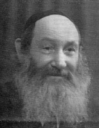

‘If I Had Another Ten Moshes, I Would Turn Over All of Russia’
R’ Moshe Akselrod, a talmid in Tomchei T’mimim in Lubavitch, was asked by the Rebbe Rashab to study for smicha. He served as a rav in a number of Russian towns in a strong and fearless manner. * With the help of Agudas Chabad in the United States he was able to leave Russia for Eretz Yisroel. He settled in Ramat Gan and was appointed as rav. * In 5720, at the peak of his hafatza activities, he fell sick and died suddenly. * Presented for his yahrtzait on 28 Shvat.

In 5666, his grandfather sent him to learn in Lubavitch. At first, he learned in the preparatory branch of Yeshivas Tomchei T’mimim in Szedrin where he also celebrated his bar mitzva. Then he went to Lubavitch where he acquired knowledge and Yiras Hashem.
There was a special relationship between young Moshe and the Rebbe Rashab. The young man found a spiritual father in the Rebbe and the Rebbe bestowed his love upon him. He also found a mother in Lubavitch and he was known as a ben-bayis by Rebbetzin Rivka, the wife of the Rebbe Maharash.
“The kiruv was to such an extent,” said R’ Refael Kahn, “that a debate ensued among the bachurim about the reason for the special kiruv of Moshe to Beis HaRav. Some said that the reason was his appointment as a mentor for one of the Rebbe Maharash’s grandsons. Others said that it had to do with his being in charge of Kupas HaBachurim.”
Another story about the close connection between the Rebbe Rashab and R’ Moshe was told by the Chassid R’ Chaim Moshe Alperowitz, who lived in Ramat Gan:
“The Rebbe Rashab had a special love for R’ Moshe. Several years after he married, when he was serving as rav in Zhlobin, he once arrived in Lubavitch in the evening. He immediately went to the Rebbe’s house. The Rebbe was standing there with a towel in his hand, about to wash his hands for the evening meal, but when he saw R’ Moshe, he welcomed him with great joy and open love and wanted to know all the details of the situation in Zhlobin. The conversation went on for so long that Rebbetzin Shterna Sarah said to R’ Moshe, ‘Have mercy. The Rebbe hasn’t eaten anything yet today!’”
As the person in charge of Kupas Bachurim, R’ Moshe was involved in a number of things. He would raise funds and make sure to the cover the expenses of the fund. He was the one who provided clothing and food for needy bachurim. He knew how to do this with love, without shaming anyone, and he would make needy bachurim feel good. The bachurim even nicknamed him “the mother of the bachurim.”
“Even with everything he was busy with,” concluded R’ Kahn, “he always found the time to learn. He studied Torah day and night and devoted a few hours a day to t’filla too. Although in Lubavitch the times for learning were sacrosanct, R’ Moshe was one of the few bachurim who had permission to come late because he was davening at length.”
RABBANUS AND ASKANUS
In 5671/1911, when he was 18, R’ Moshe was given smicha by the rav of Lubavitch, R’ Dovid Yaakovson. He married four years later and had his first yechidus with the Rebbe Rashab after he married, on Rosh HaShana 5675. In this yechidus, the Rebbe told him to become a rav and said he should go to serve as rav in Belyov in the Tula region, where the Jews had been looking for a suitable candidate to be their rav for some time.
R’ Moshe said he still needed to develop his Torah knowledge, which he could devote himself to with relative ease since his father-in-law had promised to support him for several years so he would have no parnasa worries. Furthermore, in those days the Pale of Settlement was still in force and one could live somewhere only after receiving special permission from the government. However, the Rebbe Rashab dismissed this and said there would be permission.
Confident with this bracha, R’ Moshe went to Belyov, where there was an official ceremony to inaugurate him as the new rav. For some time already, the town had been sorely lacking in basic areas of Yiddishkait. The stores were open on Shabbos and there were no chadarim for the children. R’ Moshe got to work and began to firmly and wisely strengthen the walls of Judaism in the community. He founded chadarim and explained to the residents the importance of Shabbos observance and the need to close stores on this holy day. He was successful, and Jewish life began to flourish once again.
Around 5679, the Rebbe Rashab asked R’ Moshe to send him a list of Lubavitcher rabbanim who did not have a proper income, so he could support them with a monthly stipend and they would not have to go to work. The Rebbe also sent him money for the chadarim he had founded.
R’ Moshe did not remain long in Belyov as, after a while, he received instructions from the Rebbe to move to Zhlobin. The previous rav had left, for various reasons, and the Rebbe saw R’ Moshe as a good replacement.
Upon arriving in Zhlobin, R’ Moshe founded chadarim and a yeshiva. This yeshiva was called Maareches Tomchei T’mimim of Lubavitch in Zhlobin. The yeshiva succeeded in attracting many young men to Chassidus and R ‘Moshe sent some of them to Lubavitch to learn in Tomchei T’mimim. Among them was the Chassid and famous mashpia, R’ Nissan Nemanov. R’ Nissan did not come from a Chassidishe family and R’ Moshe was mekarev him and brought him to his home.
At first, they learned Nigleh and Chassidus together. After a while, R’ Moshe sent him to Tomchei T’mimim. The yeshiva was new to R’ Nissan and when he didn’t find his place there, he returned to Zhlobin. R’ Moshe continued to learn with him and then sent him back to Lubavitch, at which point he began to reach great heights.
R’ Moshe, along with R’ Zalman Havlin and R’ Yaakov Moskolik (Zhuravitzer), went to the Chernigov district, by instruction of the Rebbe Rashab, in order to start shiurim there in Ein Yaakov and Chassidus.
In 5687/1927, R’ Moshe was appointed rav in Surazh. He received a bracha from the Rebbe Rayatz for this appointment. In Surazh, as in Belyov, Zhlobin and Chernigov, he continued his work to strengthen Judaism and opened chadarim and yeshivos. The Rebbe Rayatz was informed of his accomplishments, and when necessary would send him instructions with guidelines as to how to open, establish and maintain the religious institutions in that place.
R’ Simcha Gorodetzky spoke about R’ Moshe’s hiskashrus to the Rebbe Rayatz; he retold that one time the Rebbe asked him (R’ Simcha) to do a dangerous shlichus. He hesitated about whether to do it or not. The Rebbe said to him: Why is it that when I ask R’ Moshe (Akselrod) to do something, he responds immediately while you hesitate?
THE NOOSE TIGHTENS AND THE DANGER INCREASES
It was the era of terror under the communists in which no one knew what tomorrow would bring. News about the arrest and exile of rabbanim and melamdim was heard daily. People disappeared, never to be heard from again. In many places, Jewish activities were kept very quiet or curtailed or were stopped entirely. Nevertheless, the devoted Chassidim of the Rebbe Rayatz opened new mosdos to replace those that had been closed by the authorities. The danger was great, but this wasn’t sufficient reason to weaken their activities. The shluchim went out with mesirus nefesh, without knowing whether they would return in peace. When they received word that one of them had been arrested, another Chassid went to replace him in the hopes that he wouldn’t end up the same way as his predecessor.
R’ Moshe didn’t rest. He continued his work as though nothing was going on. According to some elder Chassidim of the previous generation like R’ Mendel Futerfas and R’ Benzion Shemtov, R’ Moshe was one of the ten Chassidim who swore allegiance to the Rebbe Rayatz, saying they would fight to spread Judaism till their last drop of blood.
The Rebbe Rayatz said about him, “If I had another ten Moshes, I would turn over all of Russia.”
His work did not exactly endear him to the Russian authorities. In the winter of 5692, when someone informed them that R’ Moshe was secretly teaching Torah, they issued an order to have him arrested. KGB agents arrested him, but surprisingly, after two weeks in jail, he was released. How did that happen? The informer had regrets about what he did and he went to the KGB offices and said he had made it up. Miraculously, they believed him and released R’ Moshe and sought to sentence the informer for providing false information. R’ Moshe intervened and said he forgave him and asked that they forgive him too.
R’ Moshe continued his work underground, founding chadarim and yeshivos. In addition, he had another secret shlichus that entailed no less danger than his educational work. The communists were attempting to eradicate any trace of Judaism, and to further this goal they closed mikvaos throughout the Soviet Union. R’ Moshe looked for a solution to this problem. He traveled around to cities in White Russia in order to locate mikvaos. He fixed those that needed fixing and re-opened those that the government had locked.
In order to do these activities, he used the following clever stratagem. He made the rounds of mikvaos in the guise of a government health inspector. In his pocket he had a certificate from the Department of Health. When he arrived at a mikva, he presented the certificate to those in charge and asked to inspect the mikva. When he went in, he would ostensibly be checking the quality of the water and hygiene of the place. He would make observations, pointing out problems with the cleanliness and give the general impression of being an expert. Actually, what he was doing was ensuring that the mikva was kosher. For those mikvaos that needed fixing, he would leave a report with detailed instructions.
This entailed great danger and R’ Moshe had to constantly hurry and leave the city before they were on to him. R’ Moshe Sudakevitz said:
“I remember how, when I was a little boy, I once saw my father conferring secretly with R’ Moshe Akselrod. The conversation probably had to do with the problem of mikvaos and ways of solving them. As they spoke, I noticed my father secretly handing R’ Moshe a certificate from the Department of Health, which R’ Moshe quickly hid in his pocket.”
R’ Moshe continued his work, and the persecution against him intensified. In 5694 he had to take flight from Surazh, and he moved temporarily to Moscow. They tracked him down several times and tried to arrest him. A miracle occurred each time and they left him alone.
RABBANUS IN RUSSIA
The Rebbe Rayatz heard about R’ Moshe and his dire situation and told him to make every effort to leave Russia. Friends used their connections in the various government offices on his behalf. After a while, their efforts were successful and an appointment was made for him with the president of Russia at that time, Kalinin. At this meeting, he presented his request to leave Russia for Eretz Yisroel. Kalinin approved his request and said that exit visas should be provided for him and his family.
In the period before moving to Eretz Yisroel, despite the danger involved, he continued his usual work in spreading Judaism. Every day he would give shiurim in the big shul in Moscow. When they asked him how he dared, he replied, “How can I not?”
The long-awaited day arrived in 5796/1936. R’ Moshe and his family packed their suitcases and took a train to Odessa, their port of departure for Eretz Yisroel.
R’ Moshe’ original plan, to work in Yeshivas Toras Emes in Yerushalayim, did not work out. When he arrived he found out that his friend, R’ Zalman Havlin, with whom the matter had been arranged and who had undertaken to see it through, had just died. So R’ Moshe settled in Ramat Gan, which in those days was full of ziknei Anash and great Chassidim.
In Ramat Gan, R’ Moshe served as rav in the Ramat Yitzchok neighborhood and rav of the city slaughterhouse for 24 years. He was also the rav of the Chabad shul “Sukkas Shalom,” which was the hub for Anash in B’nei Brak and Ramat Gan.
For a number of years, he ran the yeshivos Tomchei T’mimim and Achei T’mimim in Tel Aviv. In this position, he received many letters from the Rebbe Rayatz who even sent a monthly stipend of $500 to the yeshiva. In 5709 he was appointed as the Rebbe Rayatz’s representative to the Vaad HaYeshivos in Eretz Yisroel.
There are also letters from the Rebbe to him, regarding his rabbanus and his involvement in Hafatzas Chassidus. There is an interesting letter from 5712 in which the Rebbe responds to R’ Moshe’s request for notes of the Rebbe’s farbrengens:
You are surely right in asking about sending the sichos from Shabbos Mevarchim etc. but what can I do? I am overburdened with work in addition to my pressures which steal away my time …
R’ Moshe Akselrod passed away on 28 Shvat after being sick for a short time. He left an indelible impression on the Chassidim of the present generation who knew him.
Beis Moshiach (staff). "‘If I Had Another Ten Moshes, I Would Turn Over All of Russia’." Beis Moshiach, no. 868 (February 7, 2013).